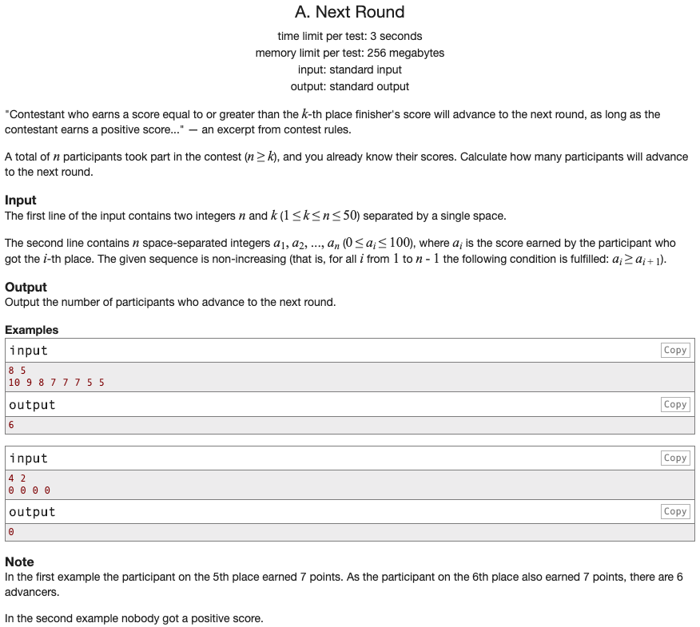

Codeforces 문제 풀이: 158A - Next Round

문제 파악
k번째의 점수 이상이면, 다음 라운드로 넘어갈 수 있다.
또한, 양수인 점수를 얻을 때만 가능하다.
점수가 양수이면서 k번째의 점수 이상인 사람 수를 세면 된다.
문제 풀이
두 번째 열의 입력을 배열로 받으면, k번째의 점수를 쉽게 얻을 수 있다.
입력받은 점수 배열을 순회하면서 조건에 맞는 경우, 사람 수를 증가시킨다.
풀이 소스
문제 풀이 환경: Python 3.7
1
2
3
4
5
6
7
8
9
n, k = map(int, input().split())
scores = list(map(int, input().split()))
advancer_count = 0
for score in scores:
if score > 0 and score >= scores[k - 1]:
advancer_count += 1
print(advancer_count)
리팩토링
위 코드는 항상 입력받은 점수 배열의 요소를 모두 순회하도록 되어 있다.
이를 개선시켜 반대 조건일 때 순회를 중지하도록 해 불필요한 순회를 하지 않도록 한다.
반대 조건을 구할 때, 드 모르간의 법칙을 이용하면 쉽게 구할 수 있다.

말로 풀어 설명하면,
A 또는 B일 때의 부정은 A의 부정이고 B의 부정과 같다.
또한, A이고 B일 때의 부정은 A의 부정 또는 B의 부정과 같다.
Python으로 표현하면,
not (A or B) == not A and not B이고, not (A and B) == not A or not B이다.
위 코드에서 score > 0 and score >= scores[k - 1]의 부정은 not (score > 0 and score >= scores[k - 1])이지만, 드 모르간의 법칙을 적용해 각각의 부정을 or 연산한 것으로 대체할 수 있다.
score > 0의 부정은 score <= 0이지만, 이 문제에서는 0 이하로는 입력될 수 없으므로 score is 0로 표현해도 된다. 또한, score >= scores[k - 1]의 부정은 score < scores[k - 1]이 된다.
결론적으로 다음과 같이 작성할 수 있다.
1
2
3
4
5
6
7
8
9
10
11
n, k = map(int, input().split())
scores = list(map(int, input().split()))
advancer_count = 0
for score in scores:
if score is 0 or score < scores[k - 1]:
break
advancer_count += 1
print(advancer_count)
이로써 불필요한 순회를 줄일 수 있다.